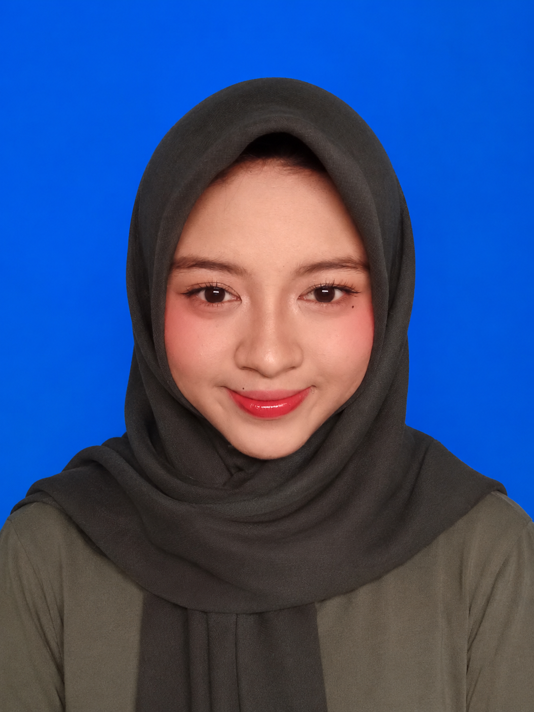

Mahasiswa Program Studi Bisnis Digital
Nama : Aulia Juliawati
NIM : E030425080
Program Studi : Bisnis Digital
Kelas : C
Email : julie270706t@email.com
Saya adalah mahasiswa aktif Bisnis Digital yang senang mencoba hal baru dan memiliki ketertarikan pada beberapa aktivitas. Pada saat waktu luang saya seringkali mendengarkan musik, menonton film, memasak, dan menyanyi. Saya juga senang belajar mengembangkan diri melalui pengalaman baru.